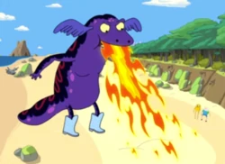

Finn e Jake chegam na praia perseguindo e dando pum em uma salamandra que roubou umas botas
A salamandra gigante começa a fugir para o mar.
Eles vão atrás dela, mas
assim que o Finn entra na água ele começa a surtar
e sai correndo pra areia
"Por que meu estomago está pirando?"
